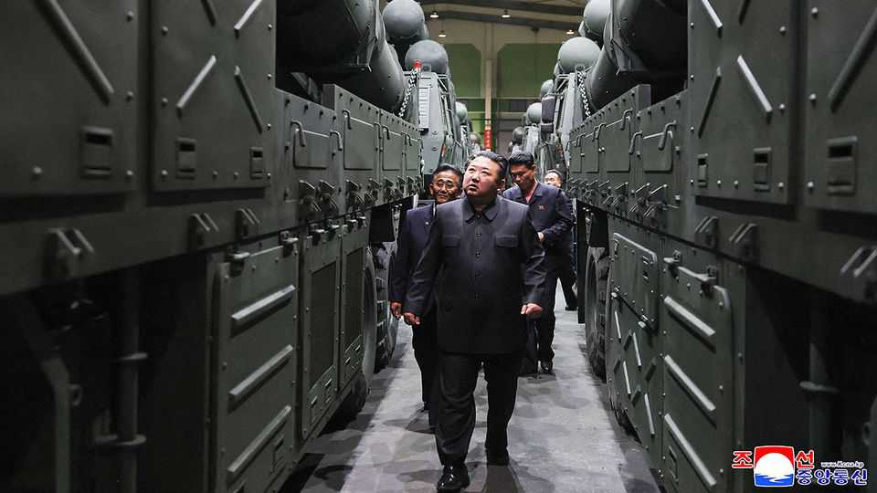

Don’t put Donald Trump and Kim Jong Un in a room together
A summit between the two “friends” could go horribly wrong

Oct 1st 2026
As long as Donald Trump is president of the United States, North Korea’s leader, Kim Jong Un, “is going to be fine”, says Mr Trump, because “He respects me and he likes me.” Other observers are less sanguine. Mr Kim, a hereditary god-king, has between 57 and 120 nuclear bombs, and his gulag state produces enough fissile material for ten to 20 more each year. It also makes short-range missiles that could hit liberal, democratic South Korea and intercontinental ballistic ones that could reach any part of America or Europe.
Three decades of international efforts have failed to make the North end its nuclear programme. Mr Kim, like his father before him, sees nukes as the best guarantee that he will not be overthrown (and perhaps end up like Muammar Qaddafi, killed by his own subjects). America’s war against Iran, which has not yet built a nuclear weapon, surely strengthens that view. So America’s official policy—that North Korea should give up its nuclear arms—seems unrealistic. Some think it should be scrapped.
It is not clear whether Mr Trump is one of them. But it is clear that he would like to see his “friend” again, despite their previous three meetings having achieved nothing. This could happen when (and if) Mr Trump attends an Asia-Pacific summit in China on November 18th. Mr Kim might nip across from Pyongyang to meet him. Mr Trump might even become the first sitting American president to visit the hermit kingdom’s capital. But Mr Kim has made formal American acceptance of North Korea’s nuclear status a precondition for meeting.
Since North Korea obviously is a nuclear power, would saying so really be so bad? South Korea’s president, Lee Jae Myung, favours a “peace first” policy, under which talk of denuclearisation is shelved (which is not quite the same thing as recognising the North as a nuclear power, but in practical terms is not far off). This, he believes, would allow progress on smaller, more tractable topics. These could include confidence-building measures such as hotlines and visits, or expanded trade and investment. Perhaps some troops could be pulled back from the border between the two Koreas? Maybe the North could reduce its nuclear stockpile a bit? Or, if America stopped demanding full denuclearisation, might the North stop giving Russia missiles and troops to kill Ukrainians?
Alas, there are three problems with such a trade. First, it would undermine what is left of the world’s nuclear non-proliferation system. If North Korea pays no price for signing up to the non-proliferation treaty and then cheating, other states will take note. Second, Mr Kim is untrustworthy. Whatever deal he signs he is likely to break as soon as it suits him. It is naive to suppose that, in return for nuclear acceptance, he might become less belligerent. Stoking fear of America enables Mr Kim to pose as the protector of the people he oppresses—a crucial part of his domestic propaganda.
The final problem is Mr Trump. Any deal with North Korea would be fiendishly technical, and America’s president is not a details man. If an unprepared Mr Trump were to meet an unctuous Mr Kim, an unthinkably bad deal could follow. Mr Trump might agree to pull out many of the American troops in South Korea who have deterred North Korean attacks since 1953. Far better that he let his friend in Pyongyang carry on liking and respecting him—from a distance. ■